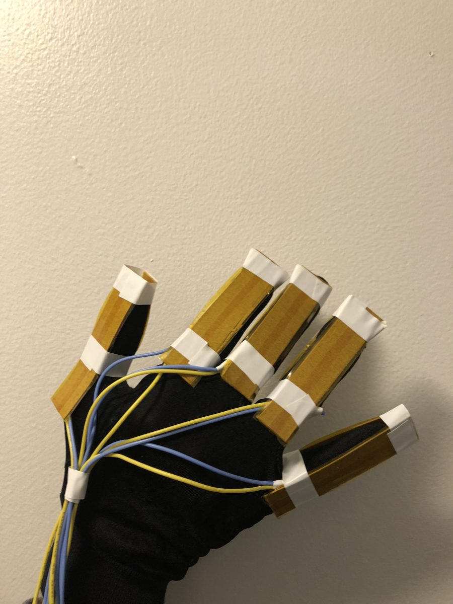
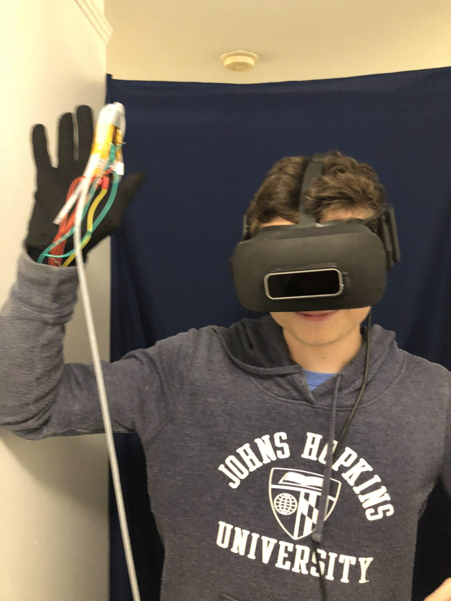
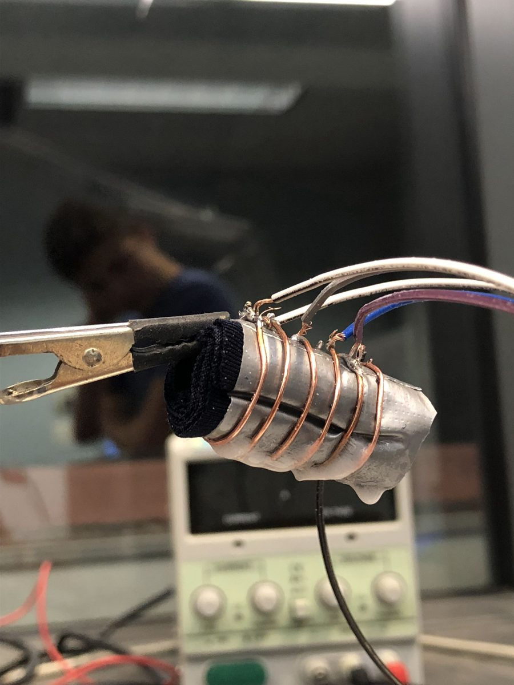
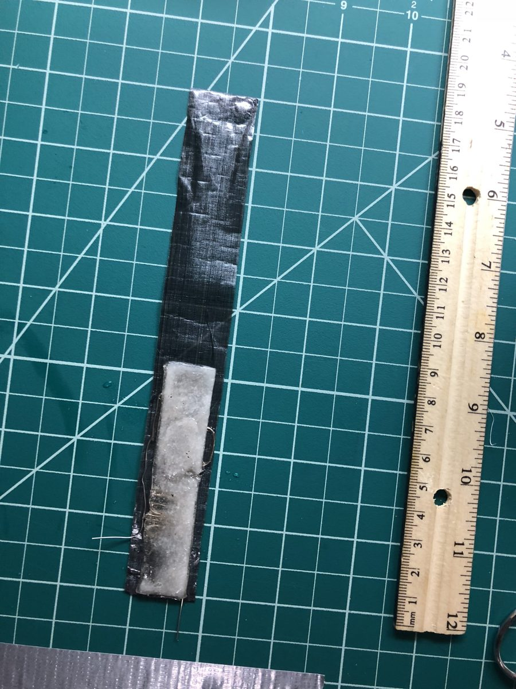
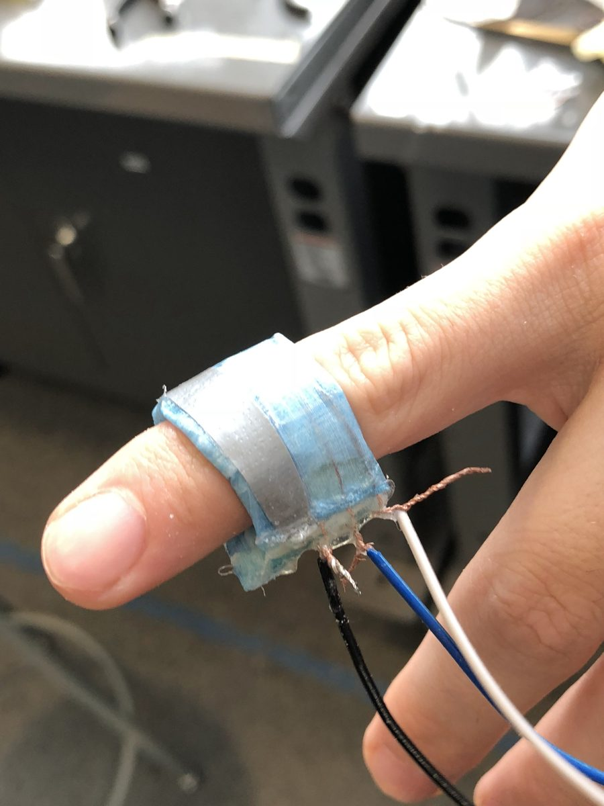
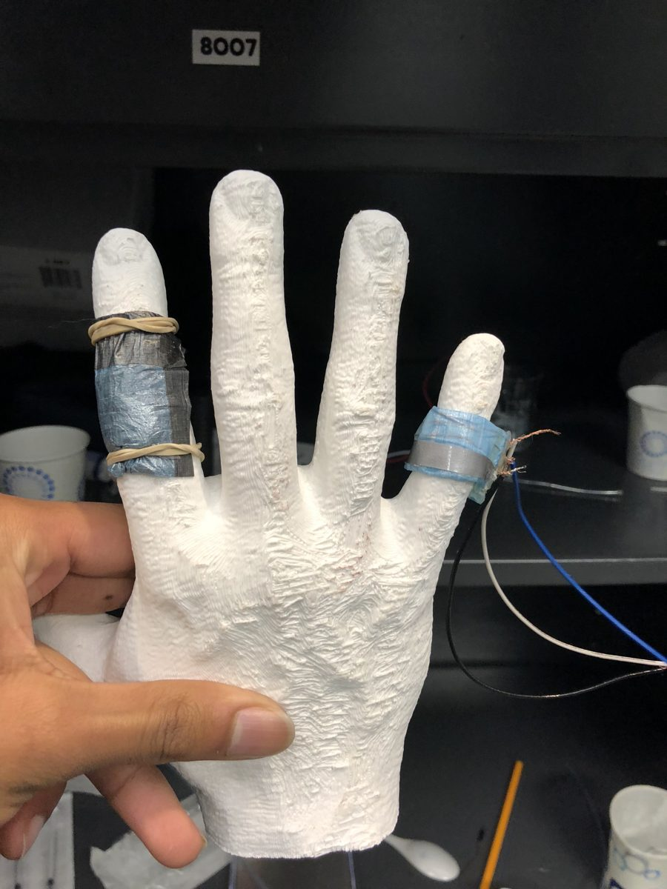
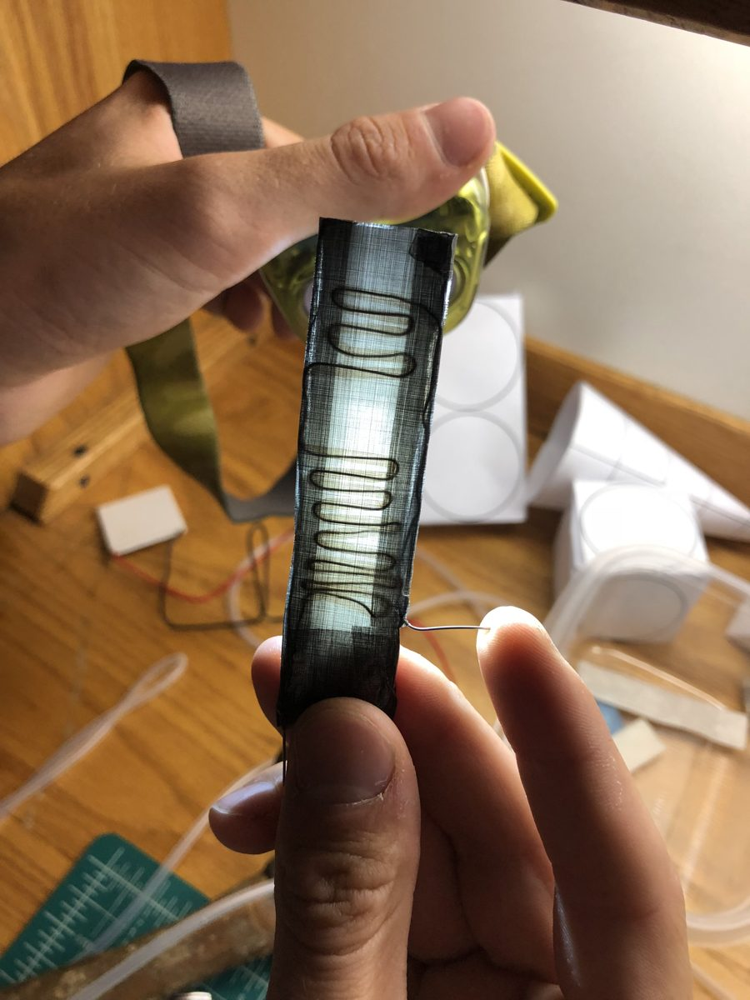

A force-feedback glove that resists finger motion using smart fluids whose rheology changes under an applied field. We started with magnetorheological (MR) fluid: micron-scale ferromagnetic particles suspended in a carrier oil, which align into chains along the field lines of an electromagnet coil and raise the fluid's yield stress within milliseconds.
We then moved to electrorheological (ER) fluid, which can be driven by lightweight electrodes rather than coils. Under a high-voltage electric field, its polarizable dielectric particles form field-aligned chains, switching the suspension from a free-flowing liquid to a solid-like gel. Each finger carries a flexible ER actuator with thin wiring running through it as an electrode, so energizing it stiffens the fluid and locks that finger, simulating contact with a virtual object in VR.






